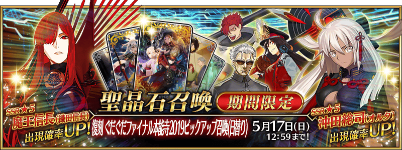
◆「復刻 GUDAGUDA Final本能寺2019Pick Up召喚(每日交替)」期間◆
期間:2020年5月3日(日) 17:00～5月17日(日) 11:59
預定舉辦期間限定「復刻 GUDAGUDA Final本能寺2019Pick Up召喚(每日交替)」！
變更在2019年舉辦的「GUDAGUDA Final本能寺2019Pick Up召喚」一部份內容進行復刻。
從期間限定活動「復刻:All信長總進擊 GUDAGUDA Final本能寺2019 輕量版」關聯的從者之中下述的從者以期間限定登場！ ・★5(SSR)魔王信長(織田信長) ・★5(SSR)沖田總司〔Alter〕 ・★4(SR)織田信長(Berserker) ・★3(R)森長可
包含上述一部份從者，下述的從者以每日交替Pick Up！ ・★5(SSR)李書文(Assassin) ・★5(SSR)魔王信長(織田信長) ・★5(SSR)沖田總司〔Alter〕
另外，下述的從者常駐Pick Up！ ・★4(SR)織田信長(Berserker) ・★3(R)森長可
並且，2019年的「GUDAGUDA Final本能寺2019Pick Up召喚」中登場的下述期間限定概念禮裝常駐Pick Up！ ・★5(SSR)群雄割拠 ・★4(SR)軍神 ・★3(R)鬼の茶会 裝備上述3種概念禮裝的話，在期間限定活動「復刻:All信長總進擊 GUDAGUDA Final本能寺2019 輕量版」中會提升活動道具的掉落獲得數。
Pick Up期間中，Pick Up對象從者與概念禮裝的出現機率提升！
詳情請在聖晶石召喚畫面左下的召喚詳細確認。
11次召喚中確定1張★4(SR)以上和確定1位★3(R)以上的從者！ ※確定★4(SR)以上包含從者和概念禮裝。 ※本頁面皆為開發中圖片。會有與實際圖片相異的情況。
◆有關從者的注意◆
※「★5(SSR)織田信長」靈基再臨到第3階段的話名稱會變成「★5(SSR)魔王信長」。
※請注意本召喚做為每日交替，下述的從者就算舉辦期間中也有不會被抽出來的日子。
・★5(SSR)李書文(Assassin)
・★5(SSR)魔王信長(織田信長)
・★5(SSR)沖田總司〔Alter〕
※下述的從者在Pick Up期間結束後不會追加到故事召喚。
・★5(SSR)魔王信長(織田信長)
・★5(SSR)沖田總司〔Alter〕
・★4(SR)織田信長(Berserker)
・★3(R)森長可
※請注意下述的從者不會從友情點數召喚被抽出。
・★3(R)森長可
※本召喚的Pick Up期間中，透過故事進行所追加的下述從者就算通過各章前也能入手。
・★5(SSR)李書文(Assassin)
※下述的從者在Pick Up期間結束後仍會在故事召喚被抽出。
・★5(SSR)李書文(Assassin)
◆有關概念禮裝的注意◆
※下述的概念禮裝，就算Pick Up期間中能靠友情點數召喚獲得。
・★3(R)鬼の茶会
※請注意在自動變還設定登錄★3(R)概念禮裝的情況，下述的概念禮裝會是自動變還的對象。
・★3(R)鬼の茶会
◆「復刻 GUDAGUDA Final本能寺2019Pick Up召喚(每日交替)」Pick Up內容◆
| Pick Up期間 | Pick Up內容 | |
|---|---|---|
| 每日交替Pick Up | 全天Pick Up | |
| 5/3(日) 17:00～ 5/4(一) 22:59 |
★5 魔王信長(織田信長) |
★4 織田信長(Berserker) ★3 森長可 |
| 5/4(一) 23:00～5/5(二) 22:59 | ★5 沖田總司〔Alter〕 | |
| 5/5(二) 23:00～5/6(三) 22:59 | ★5 李書文(Assassin) | |
| 5/6(三) 23:00～5/7(四) 22:59 | ★5 魔王信長(織田信長) | |
| 5/7(四) 23:00～5/8(五) 22:59 | ★5 沖田總司〔Alter〕 | |
| 5/8(五) 23:00～5/9(六) 22:59 | ★5 李書文(Assassin) | |
| 5/9(六) 23:00～ 5/12(二) 22:59 |
★5 魔王信長(織田信長) ★5 沖田總司〔Alter〕 |
|
| 5/12(二) 23:00～ 5/15(五) 22:59 |
★5 李書文(Assassin) ★5 魔王信長(織田信長) |
|
| 5/15(五) 23:00～ 5/17(日) 11:59 |
★5 魔王信長(織田信長) | |
※請注意會以每日交替變更Pick Up的從者。


 ※上述「★5(SSR)魔王信長(織田信長)」的卡面為靈基再臨第3階段。
※「★5(SSR)織田信長」靈基再臨到第3階段的話名稱會變成「★5(SSR)魔王信長」。
※上述「★5(SSR)魔王信長(織田信長)」的卡面為靈基再臨第3階段。
※「★5(SSR)織田信長」靈基再臨到第3階段的話名稱會變成「★5(SSR)魔王信長」。
 ※上述「★5(SSR)沖田總司〔Alter〕」的卡面為靈基再臨第2階段。
※上述「★5(SSR)沖田總司〔Alter〕」的卡面為靈基再臨第2階段。


 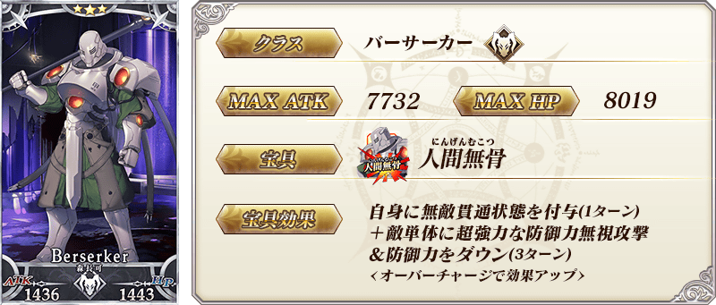
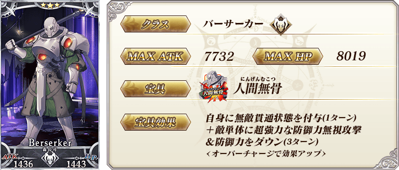
 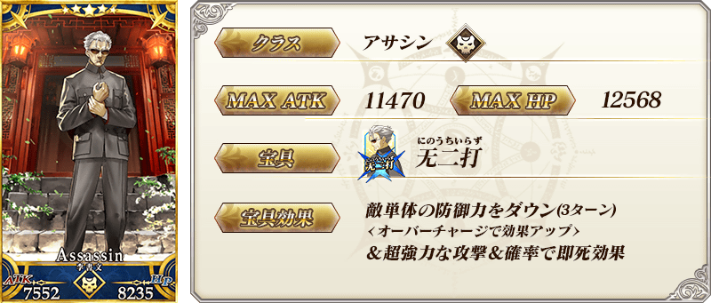
※上述「★5(SSR)李書文(Assassin)」的卡面為靈基再臨第2階段。
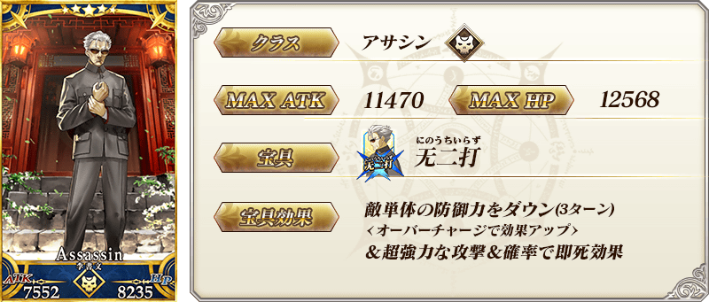
※上述「★5(SSR)李書文(Assassin)」的卡面為靈基再臨第2階段。


|
★★★★★SSR
|

| 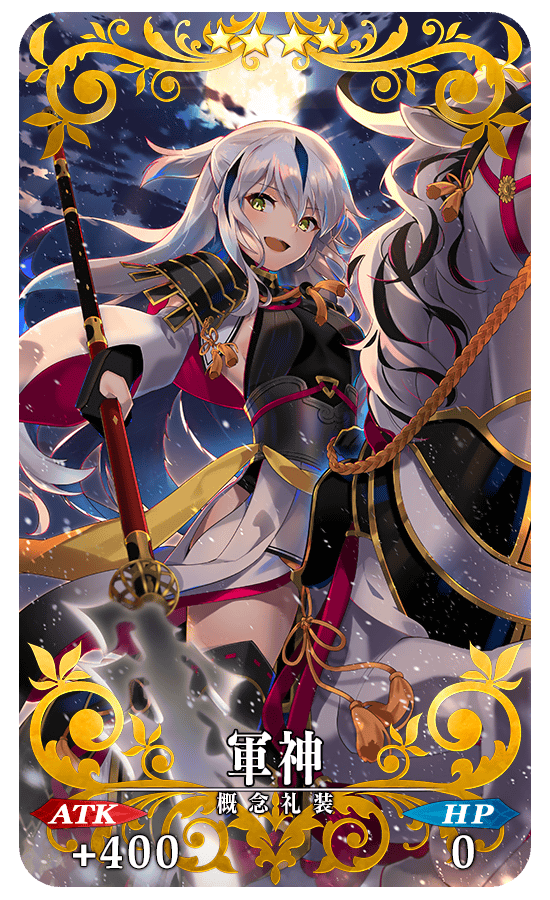 |
★★★★SR |
| 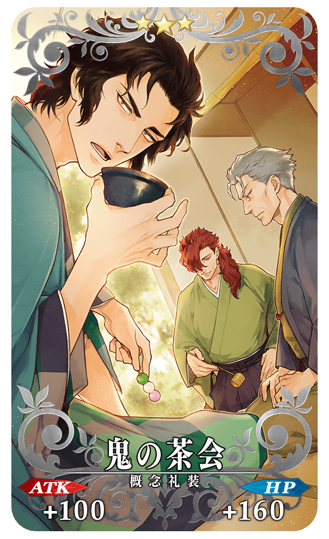 |
★★★R
|


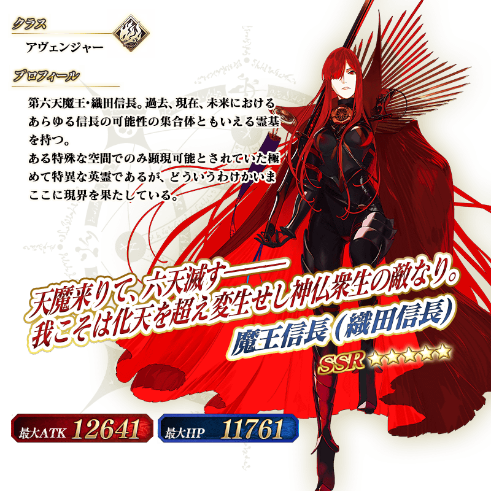 ※上述「★5(SSR)魔王信長(織田信長)」的立繪為靈基再臨第3階段。 ※「★5(SSR)織田信長」靈基再臨到第3階段的話名稱會變成「★5(SSR)魔王信長」。
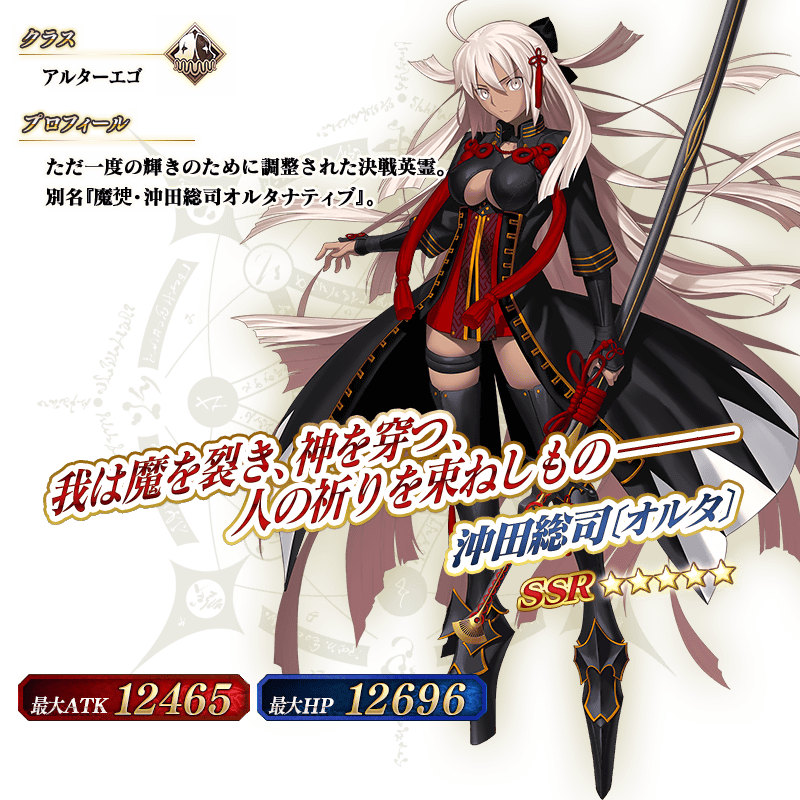 ※上述「★5(SSR)沖田總司〔Alter〕」的立繪為靈基再臨第2階段。
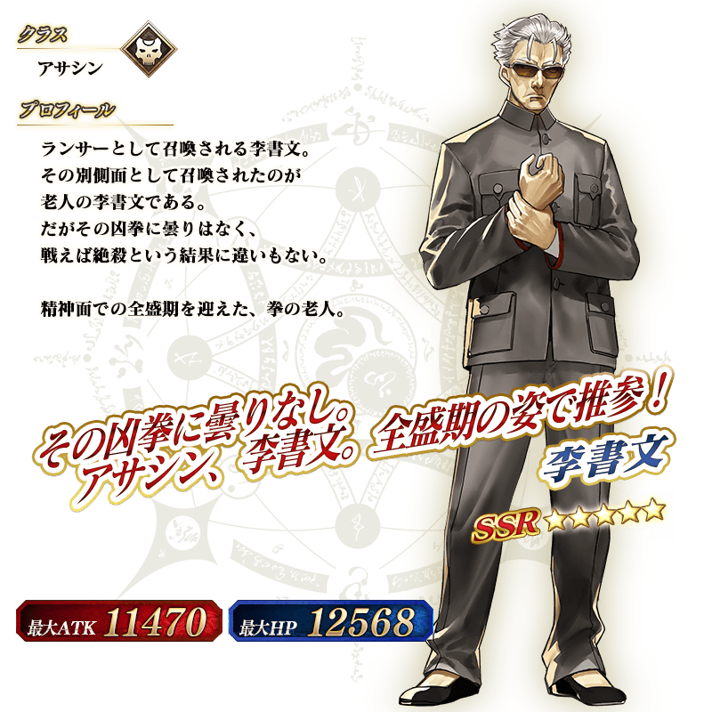 ※上述「★5(SSR)李書文(Assassin)」的立繪為靈基再臨第2階段。

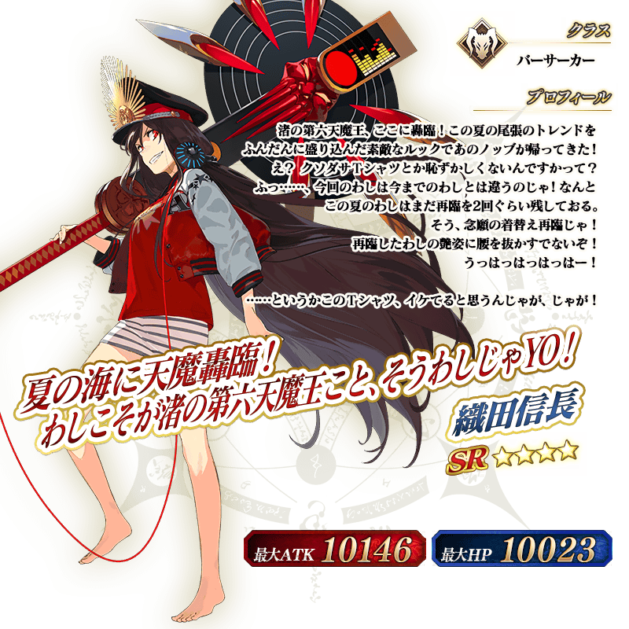

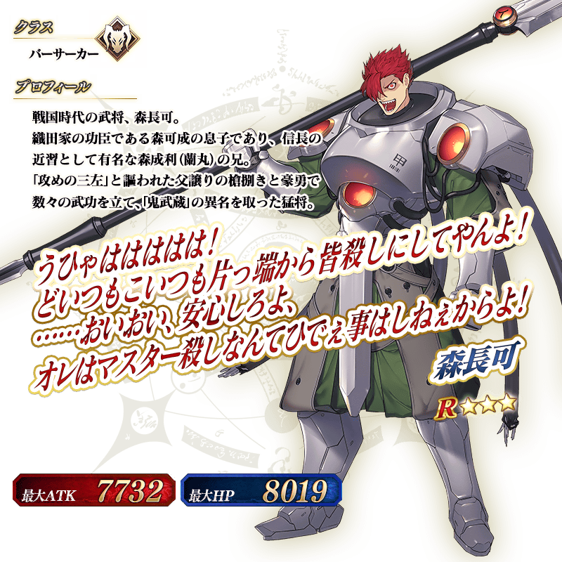

強化「★5(SSR)魔王信長(織田信長)」「★5(SSR)沖田總司〔Alter〕」「★4(SR)織田信長(Berserker)」的特別關卡「從者強化關卡」，在迦勒底之門永久追加。
不僅進行對象從者的強化，也可獲得聖晶石做為關卡通過報酬。
※請注意在從者強化關卡沒有文字冒險部份。
◆追加時間◆
2020年5月3日(日) 17:00～
◆開放條件◆
持有的強化對象從者，必須使其最終再臨。
※未持有對象從者的話，不會出現關卡。
※關卡沒有舉辦期限。
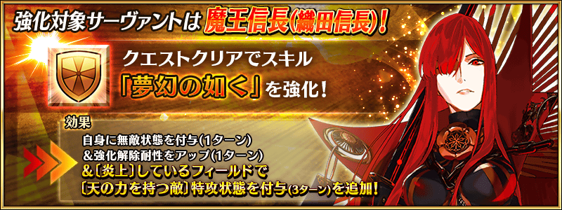
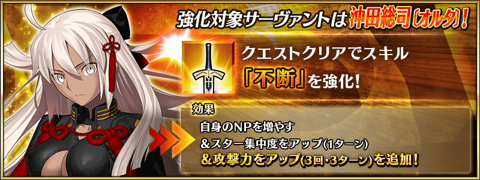
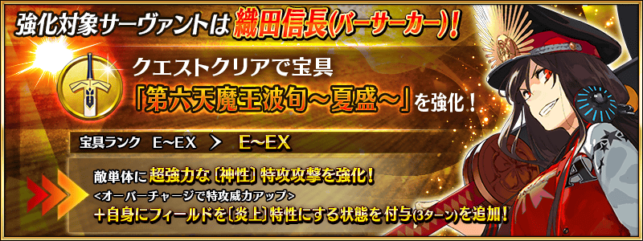
介紹在本召喚Pick Up的5位從者寶具演出！
在「Fate/Grand Order」官方網站內的公告中，以影片公開寶具演出，敬請確認。
【★5(SSR)魔王信長(織田信長)】
【★5(SSR)沖田總司〔Alter〕】
【★5(SSR)李書文(Assassin)】
【★4(SR)織田信長(Berserker)】
【★3(R)森長可】
其他還有，期間限定活動「復刻:All信長總進擊 GUDAGUDA Final本能寺2019 輕量版」同時舉辦！
關於詳情，請自下述橫幅確認。
■「復刻:All信長總進擊 GUDAGUDA Final本能寺2019 輕量版」詳細情報 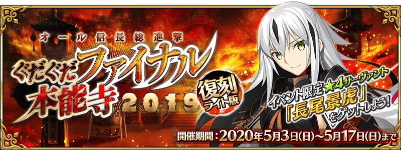